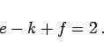
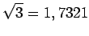
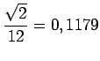
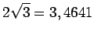
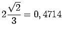
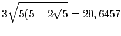
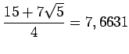
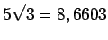
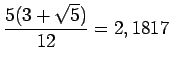

|  | (3.140) |
Beispiele sind in der folgenden Tabelle angegeben.
| Bezeichnung | Anzahl und Form der Begrenzungsflächen |
Anzahl der Kanten | Gesamtfläche F/a2 |
Volumen V/a3 |
|
| Kanten | Ecken | ||||
| Tetraeder | 4 Dreiecke | 6 | 4 |  |  |
| Würfel | 6 Quadrate | 12 | 8 | 6=6,0 | 1=1,0 |
| Oktaeder | 8 Dreiecke | 12 | 6 |  |  |
| Dodekaeder | 12 Fünfecke | 30 | 20 |  |  |
| Ikosaeder | 20 Dreiecke | 30 | 12 |  |  |